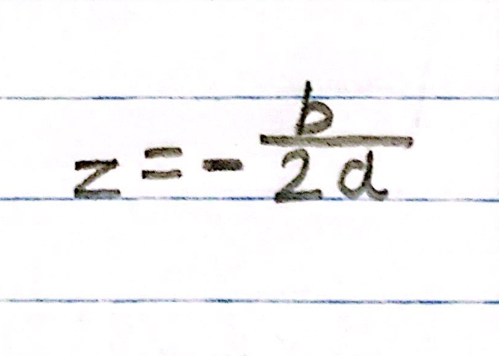
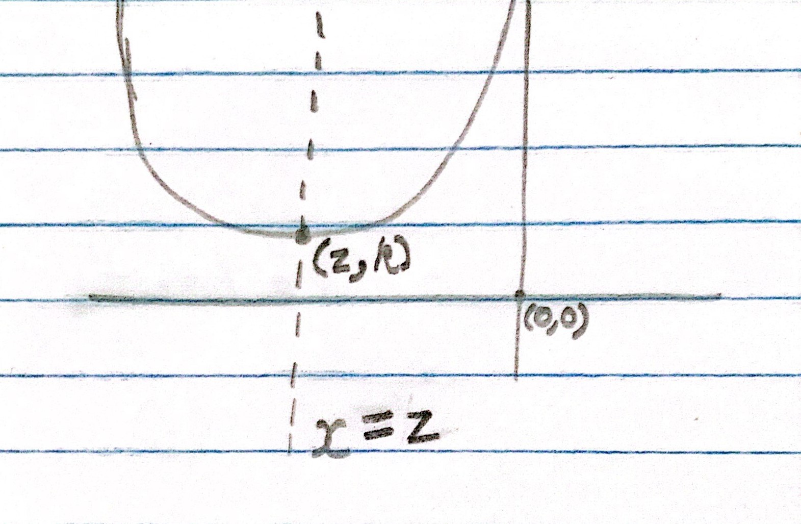
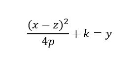
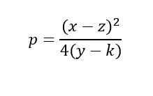
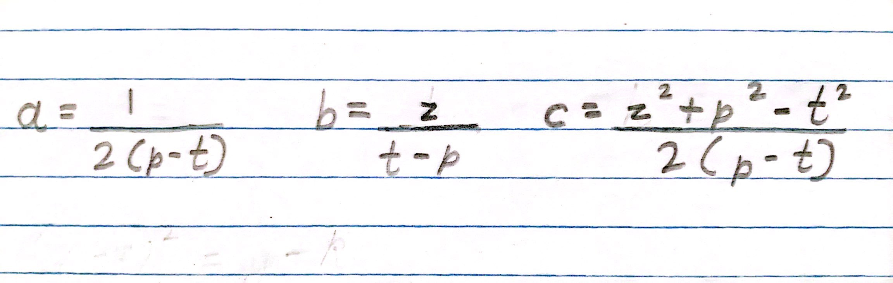

In the previous article we learnt that the axis of symmetry is x = z, where z is:
Let the point of the vertex be (z, k). Since we know what z is, we can calculate the value of k (= az2 + bz + c), then we will know where the vertex (z, k) is.
The vertex form equation of a parabola is:
We already know what the value of z and k are. Using the equation y = ax2 + bx + c, we can get a random point (x, y) from the parabola. Using the four value x, y, z and k, we can get a value for p.
The focus would be on the point (z, p). In the previous article, we learnt that:
We can use anyone of these to find the value of t and that would be our directrix.